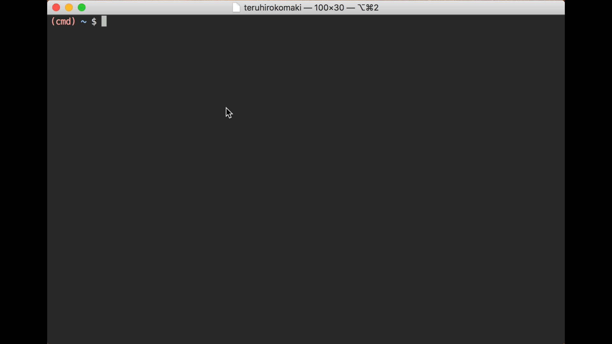

BashをViモードに変更して快適になった話
私は、まだまだ初心者のVimmerだと思いますが、Vimがあまりにも快適で使っていて気持ち良いため、普段からキーバインドをVimに変更できないかをググっています。
タイトルの通り、普段使っている Bash にも Viモード があるということが分かり、早速変更したのでメモ。
設定したターミナル

BashのViモードについてググる
なにはともあれ、ググる
- vim色に染まれ．機能紹介のついでにbashをvi仕様に．
- bashの編集モードをviモードにしてみる
- bashの操作をvi風にする
- 【Vim】えっ?Vimmerなのに、シェルのキーバインドはEmacsモード使ってるの?
上の記事では~/.bashrcにset -o viを追加すればOK、と書いてある。
# ~/.bashrc
set -o vi
しかし、私は最終的に、以下のブログを参考にし~/.bashrcではなく~/.inputrcを修正しました。
以下に、Use vi shortcuts in terminalに記載されている設定を引用
# ~/.inputrc
# Use Vi, not Emacs, style editing
set editing-mode vi
# Show all completions as soon as I press tab, even if there's more than one
set show-all-if-ambiguous on
# Ignore case
set completion-ignore-case on
# on menu-complete, first display the common prefix, then cycle through the
# options when hitting TAB
set menu-complete-display-prefix on
###########################################################
# Keymaps for when we're in command mode (e.g., after hitting ESC)
set keymap vi-command
# Insert the arguments from the last command
"p": "i !!*\r"
# When hitting option-up/option-down, cycle through the previous commands
# which start with the prefix you've entered, rather than just cycling through
# the last entered commands.
# In OS X's Terminal.app preferences, I have 'Use option as meta key' off, and
# have mapped "option cursor up" to "\033\033[A" and "option cursor down" to
# "\033\033[B".
# Feel free to bind to whatever you want. Delete the first '\e' in the keymap
# to set plain up/down to do a history search by default.
"\e\e[A": history-search-backward
"\e\e[B": history-search-forward
###########################################################
# Keymaps for when we're in insert (i.e., typing stuff in) mode
set keymap vi-insert
# Pressing tab will list all completions & select the first one. Pressing it
# again will cycle through available completions.
TAB: menu-complete
# Shift-TAB cycles completions backward
"\e[Z": menu-complete-backward
# Option-up/option-down should also apply to insert mode
"\e\e[A": history-search-backward
"\e\e[B": history-search-forward
# Needed because binding 'p' in command mode above wipes its insert mode
# function, too. This fixes that, and will insert 'p' when you type 'p'.
"p": self-insert
~/.inputrc を修正する
ほとんど、Use vi shortcuts in terminalの設定をコピーしていますが…
for vi modeの部分は、のちほど説明
# Use Vi, not Emacs, style editing
set editing-mode vi
# Show all completions as soon as I press tab, even if there's more than one
set show-all-if-ambiguous on
# Ignore case
set completion-ignore-case on
# on menu-complete, first display the common prefix, then cycle through the
# options when hitting TAB
set menu-complete-display-prefix on
###########################################################
# Keymaps for when we're in command mode (e.g., after hitting ESC)
set keymap vi-command
###########################################################
# Keymaps for when we're in insert (i.e., typing stuff in) mode
set keymap vi-insert
# Pressing tab will list all completions & select the first one. Pressing it
# again will cycle through available completions.
TAB: menu-complete
# Shift-TAB cycles completions backward
"\e[Z": menu-complete-backward
# for vi mode
set show-mode-in-prompt on
set vi-ins-mode-string \1\e[34;1m\2(ins) \1\e[0m\2
set vi-cmd-mode-string \1\e[31;1m\2(cmd) \1\e[0m\2
せっかくなので ~/.bashrc のPS1も載せとく
色をちょこちょこ設定しようと思ったので、以下のように設定してる
バッドプラクティスかもしれないので、優しい方は突っ込んで頂けるとありがたいですm(_ _)m
#--------------------------------------------------
# ps1
#--------------------------------------------------
function prompt {
local GITPS='$(__git_ps1 " [%s]")'
local BLUE="\[\e[1;34m\]"
local RED="\[\e[1;31m\]"
local GREEN="\[\e[2;32m\]"
local WHITE="\[\e[00m\]"
local GRAY="\[\e[1;37m\]"
PS1="$BLUE\w$BLUE$RED$GITPS$RED $WHITE\$$WHITE "
}
prompt
現在のモードがわからない問題
.inputrcを設定し、ターミナルを起動すれば、無事 Viモードになっているはず
この状態で、しばらく使っていたのですが、ターミナルに現在のモードが表示されていないため、現在のモードがinsなのかcmdなのか分からない問題が発生
ということで、ターミナルに現在のモードを表示するために、引き続きググる
ターミナルに現在のモードを表示する
以下の記事にたどり着いた
色々と見たが、おそらく GitHub のREADME.mdを見るのが、わかりやすい
GitHubを見ると、Bashのバージョンが4.3.48以上が必要っぽい
現在使っているBashのバージョンを確認し、必要であれば、brewでインストールし、ログインシェルを変更する必要がある
Bashのバージョンの確認
まずは確認
~ $ /bin/bash -version
GNU bash, version 3.2.57(1)-release (x86_64-apple-darwin17)
Copyright (C) 2007 Free Software Foundation, Inc.
brewでBashをインストールする
いつも通り、インストール
~ $ brew install bash
Updating Homebrew...
==> Auto-updated Homebrew!
Updated 3 taps (homebrew/cask-versions, homebrew/core and homebrew/cask).
==> Updated Formulae
asciidoctor ✔ ccextractor ethereum grib-api openvdb source-to-image
harfbuzz ✔ chruby-fish fluent-bit hebcal pacapt typescript
weechat ✔ cpprestsdk fonttools ioping pdftoipe you-get
activemq dartsim git-archive-all libjson-rpc-cpp ppsspp
ark dfmt glm liblo rdesktop
bash-snippets django-completion grails mongo-cxx-driver selenium-server-standalone
==> Downloading https://homebrew.bintray.com/bottles/bash-4.4.23.high_sierra.bottle.tar.gz
######################################################################## 100.0%
==> Pouring bash-4.4.23.high_sierra.bottle.tar.gz
==> Caveats
In order to use this build of bash as your login shell,
it must be added to /etc/shells.
==> Summary
🍺 /usr/local/Cellar/bash/4.4.23: 146 files, 8.8MB
brewの出力にも書かれている通り/etc/shellsに追加する
In order to use this build of bash as your login shell,
it must be added to /etc/shells.
/etc/shells に追加する
現在のファイルを確認
~ $ sudo cat /etc/shells
# List of acceptable shells for chpass(1).
# Ftpd will not allow users to connect who are not using
# one of these shells.
/bin/bash
/bin/csh
/bin/ksh
/bin/sh
/bin/tcsh
/bin/zsh
brewでインストールしたBashを追加
~ $ sudo vim /etc/shells
修正後に、改めて確認
~ $ sudo cat /etc/shells
# List of acceptable shells for chpass(1).
# Ftpd will not allow users to connect who are not using
# one of these shells.
/bin/bash
/bin/csh
/bin/ksh
/bin/sh
/bin/tcsh
/bin/zsh
/usr/local/bin/bash
ログインシェルを変更する
変更する前に確認
~ $ which bash
/bin/bash
変更するためのコマンドを確認
~ $ man chsh
一部抜粋
CHPASS(1) BSD General Commands Manual CHPASS(1)
NAME
chpass, chfn, chsh -- add or change user database information
SYNOPSIS
chpass [-l location] [-u authname] [-s newshell] [user]
DESCRIPTION
The chpass utility allows editing of the user database information associated with user or, by default, the current user.
The chpass utility cannot change the user's password on Open Directory systems. Use the passwd(1) utility instead.
The chfn, and chsh utilities behave identically to chpass. (There is only one program.)
The information is formatted and supplied to an editor for changes.
Only the information that the user is allowed to change is displayed.
The options are as follows:
-l location
If not specified, chpass will perform a search for the user record on all available Open Directory nodes. When specified, chpass will edit the user record on the directory node at the given location.
-u authname
The user name to use when authenticating to the directory node containing the user.
-s newshell
Attempt to change the user's shell to newshell.
Possible display items are as follows:
Login: user's login name
Uid: user's login
Gid: user's login group
Generated uid: user's UUID
Full Name: user's real name
Office Location: user's office location
Office Phone: user's office phone
Home Phone: user's home phone
Home Directory: user's home directory
Shell: user's login shell
ということで、以下のコマンドを実行
~ $ chsh -s /usr/local/bin/bash
Changing shell for yourName.
Password for yourName:
確認(reboot必要かも…)
~ $ which bash
/usr/local/bin/bash
改めてバージョンを確認する
確認
~ $ bash --version
GNU bash, version 4.4.23(1)-release (x86_64-apple-darwin17.5.0)
Copyright (C) 2016 Free Software Foundation, Inc.
License GPLv3+: GNU GPL version 3 or later <http://gnu.org/licenses/gpl.html>
This is free software; you are free to change and redistribute it.
There is NO WARRANTY, to the extent permitted by law.
現在のモードが表示されるはず
これで現在のモードが表示されるはず
モードの表示を修正する
~/.inputrcを修正すればよい
このブログを見ている人には、説明不要だと思うので、各自で要調整
# for vi mode
set show-mode-in-prompt on
set vi-ins-mode-string \1\e[34;1m\2(ins) \1\e[0m\2
set vi-cmd-mode-string \1\e[31;1m\2(cmd) \1\e[0m\2
あとがき
いつも使うターミナルをViのキーバインドで操作できるようになって、本当に快適になった